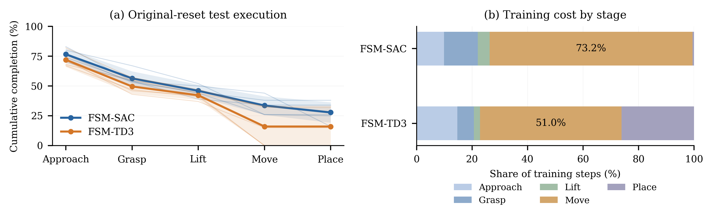

Robotic manipulation · Research project
Research group: Adaptive Autonomous Agents (A3 Research Group)
Long-horizon manipulation requires a robot to coordinate several behaviors before completing a task. We study an FSM-guided reinforcement learning framework in which a high-level finite-state machine selects the current stage and a low-level policy produces continuous robot actions. Each stage has its own policy, reward, and completion condition. Training proceeds sequentially, using successful predecessor states to initialize later stages.
We instantiate the framework with SAC and TD3 and evaluate it on PickPlaceCan in robosuite. Comparisons include official-reward single-policy training and stage-reward single-policy training across five seeds. The results support the combined training design on this task; they do not isolate the contribution of each component.
Robot and object observation → continuous position and gripper commands
Learn one stage at a time. A rolling window of 100 complete episodes triggers progression at 80% success, with a per-stage budget cap.
Initialize later-stage training from saved successful predecessor states. Retain earlier policies for complete-task execution.
Execute the policy sequence from the original environment reset. No intermediate state restoration is used during held-out evaluation.
Five training seeds · 100 held-out original-reset episodes per seed · selected best checkpoints
| Method | Complete-task success (%, mean ± SD) |
|---|---|
| Flat SAC | 0.0 ± 0.0 |
| Flat TD3 | 0.0 ± 0.0 |
| SAC + stage rewards (single policy) | 0.0 ± 0.0 |
| TD3 + stage rewards (single policy) | 0.0 ± 0.0 |
| FSM-SAC | 27.8 ± 8.6 |
| FSM-TD3 | 16.0 ± 16.3 |
Single-policy controls train for 2M steps per seed. FSM training ends on stage mastery or budget completion: SAC 0.85–1.48M; TD3 0.59–2.34M steps per seed. This comparison evaluates the combined framework under these training protocols.

APPROACH → PUSH · A successful physical execution of two PPO stage policies trained in simulation.